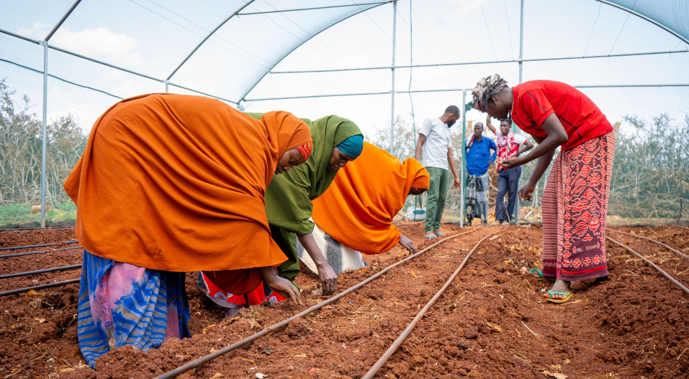

We strengthen food security through agricultural support, emergency food distributions, and livelihood programs that help families achieve self-reliance. Our interventions focus on providing immediate relief while also empowering communities to adopt sustainable practices that reduce dependency on aid.
By working closely with farmers, women-led households, and youth, LIFE Somalia promotes climate-smart agriculture, improved market access, and income-generating opportunities. These efforts ensure that vulnerable families not only have enough food today but also the skills and resources needed to secure their future food supply.
